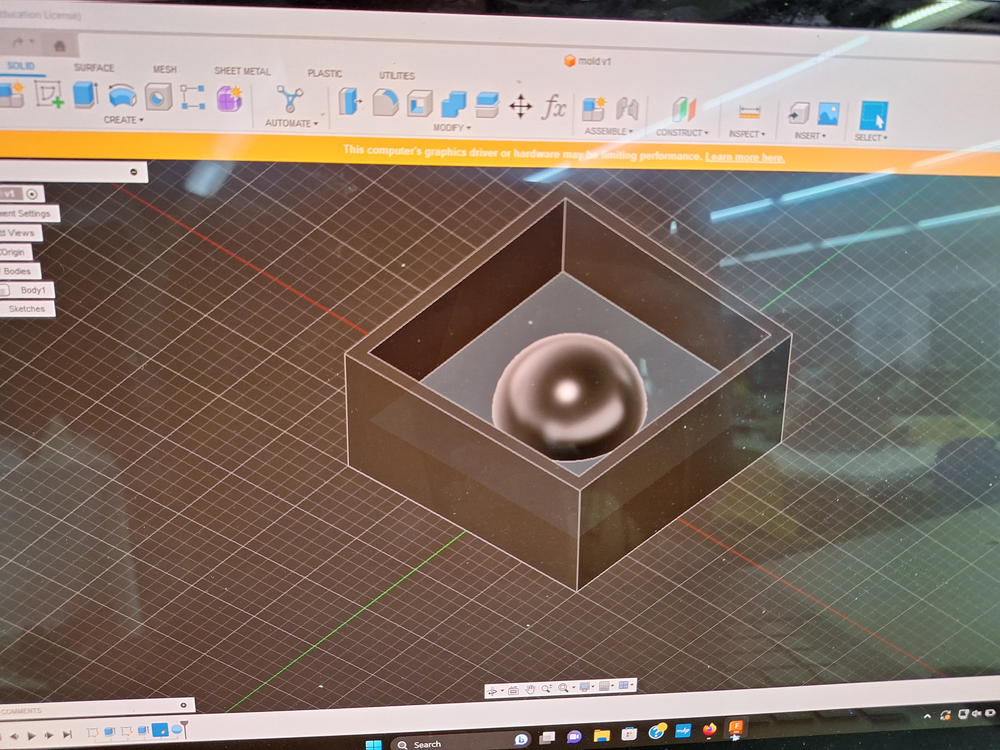
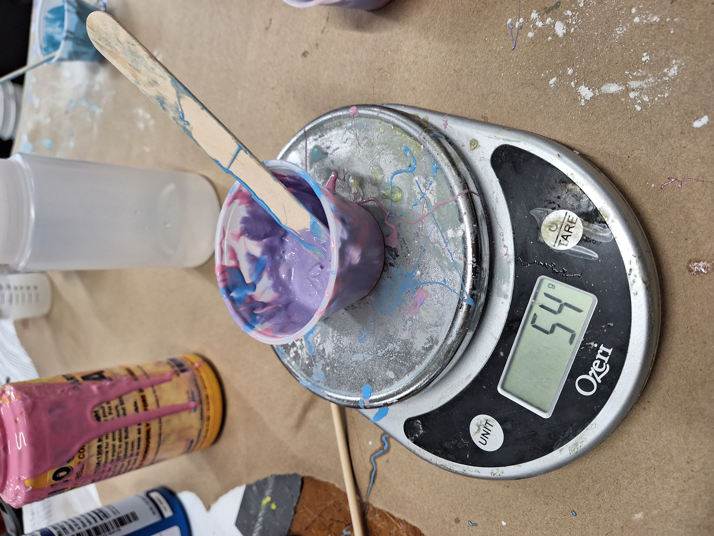
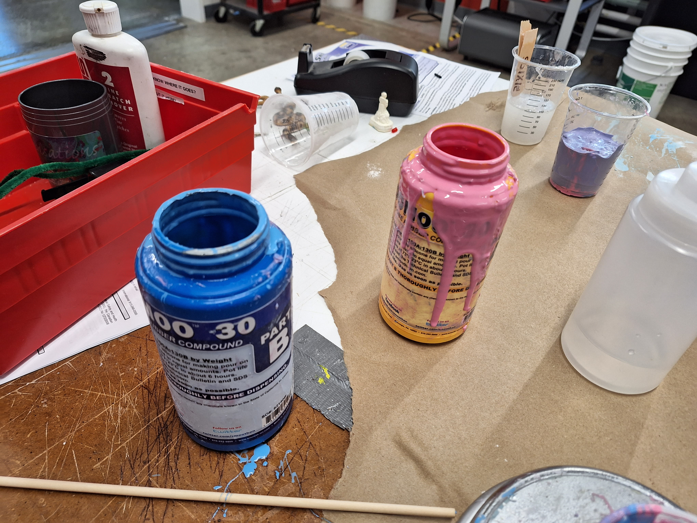
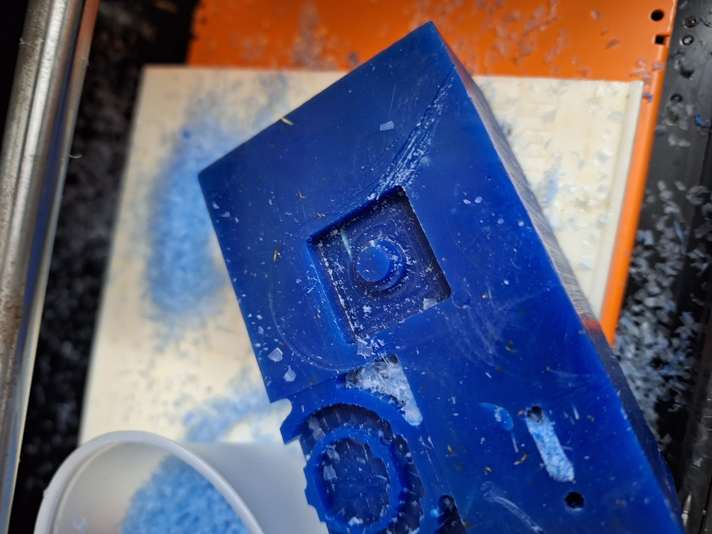
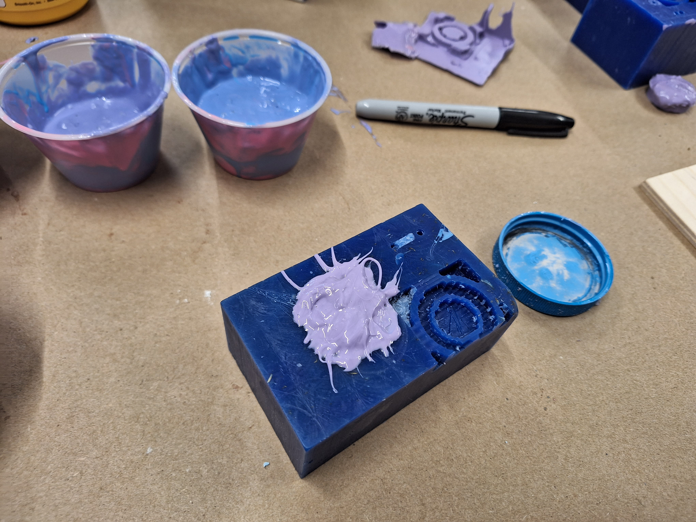
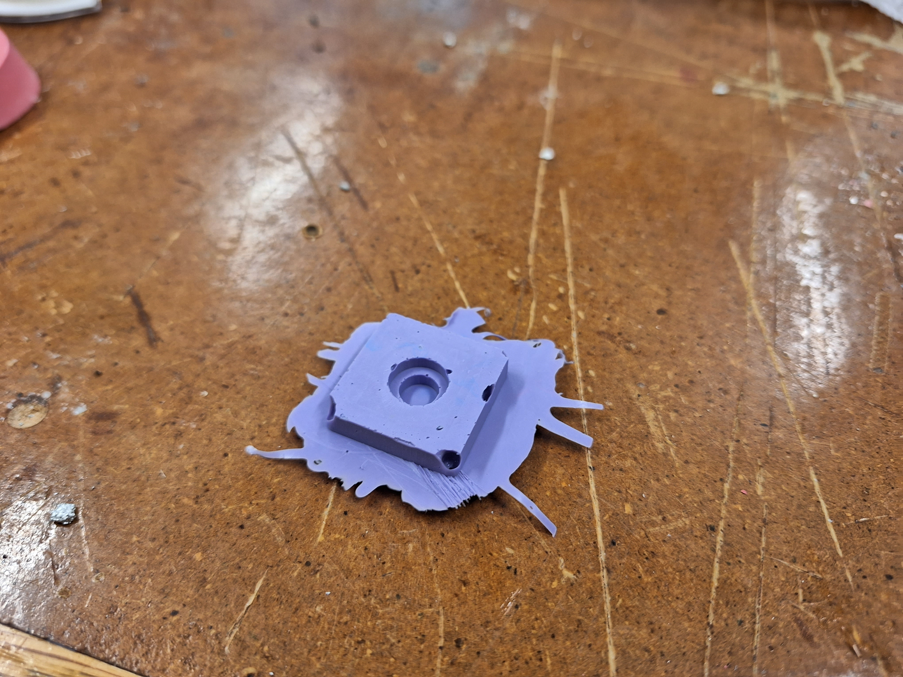

<br>
####CNC & Molding
This is the documentation for my learning of how to CNC & mold. I chose to CNC my mold out of a wax block with an SRM-20.

<br> I prepared a CAD file in FUsion and exported as an STL onto a hard drive. </br>
<img src="./molding_2_program.jpg" width="500px">
<br> I then loaded that file onto the MIT mods page on the lab's iMac, and tried to run the program to get it to cut. It didn't work at first because I followed the instructions on the video demo - apparently I wasn't supposed to do that - I was meant to follow the other instructions in the "Roughing Pass" section of the SRM-20 Mill tutorial instead. Thank you Nathan for clarifying this for me during lab on Sunday and for showing me how to run the machine. </br>
<video width="800px" muted autoplay>
<source src="./molding_vid.mp4" type="video/mp4">
</video>
<br> The mill working its magic. </br>

<br> While the mill was milling, I mixed the mixture of goo that I will be using to mold my mold. I mixed the blue and pink goo in a 1:1 ratio, making a purple goo. </br>

<br> The bottles of the goo in question. </br>

<br> After I finished mixing, I went to pick up my block of wax, which the machine had finished milling at this point. The shape didn't come out as elegantly as I had wanted it to, but it's on me for making my CAD file's dimensions too small. That said, it's still more than usable, despite its appearance - sort of like me. </br>

<br> I put the goo inside of the wax block and waited for it to congeal. </br>

<br>After a day, the goo inside of the wax block had congealed. It was a solid object now. I don't think I'll be using this for my final project, but it's been very enlightening to learn about all these different manufacturing processes.</br>